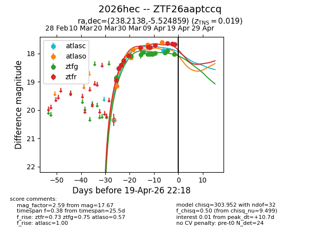
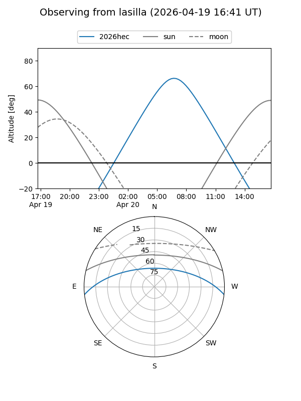
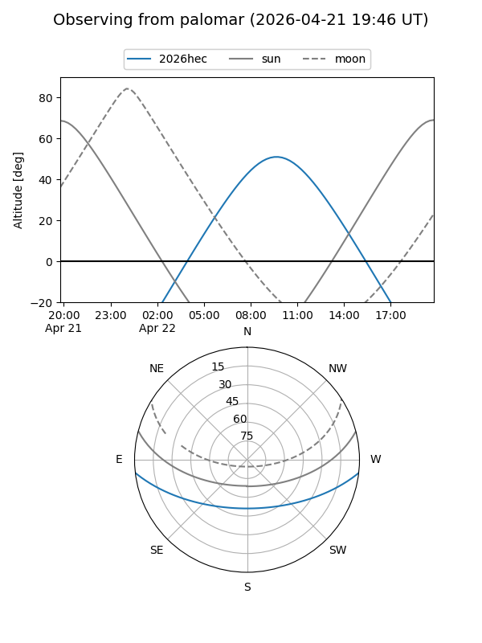
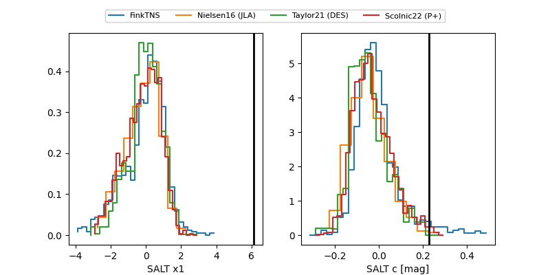

2026hec
Target 2026hec at 2026-04-19 22:28
Aliases and brokers:
FINK: link
Lasair: link
ALeRCE: link
TNS: link
YSE: link
alt names
ZTF26aaptccq (ztf,fink_ztf)
2026hec (tns,yse)
Coordinates:
equatorial (ra, dec) = 238.2138,-5.52486
equatorial (HMS+DMS) = 15:52:51.31,-05:31:29.49
galactic (l, b) = (3.1893,+35.35261)
Flags:
Photometry:
last atlasc=17.90, atlaso=17.61, ztfg=18.02, ztfr=17.67
2 atlasc, 8 atlaso, 13 ztfg, 12 ztfr detections
Lightcurve

Visibility


Additional plots
